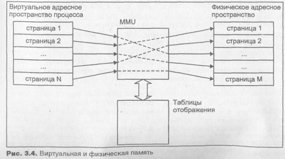
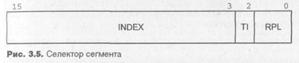
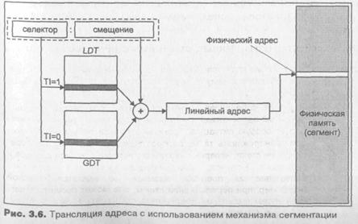
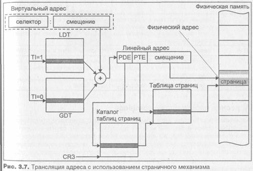
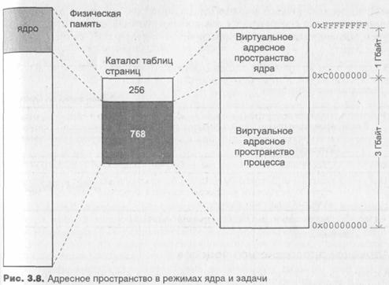
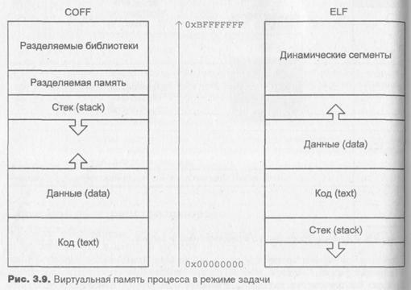

Оперативная память является, пожалуй, одним из наиболее дорогих компонентов компьютерной системы. Ранние системы UNIX имели в своем распоряжении 64 Кбайт оперативной памяти, и это количество было явно недостаточным, современные компьютеры обладают гигабайтами оперативной памяти, но и этого уже мало.
Оперативная память может быть представлена в виде последовательности байтов, каждый из которых имеет свой уникальный адрес, называемый физическим адресом. Именно эти адреса в конечном счете использует процессор, обмениваясь данными с оперативной памятью. Однако адресное пространство процесса существенным образом отличается от адресного пространства физической оперативной памяти. Представим себе, что адресное пространство процесса непосредственно отображалось бы в оперативную память, другими словами, что адреса, используемые процессом, являлись бы физическими адресами. При таком подходе на пути создания многозадачной системы нас ожидал бы ряд непреодолимых препятствий:
- Во-первых, трудно себе представить механизм, защищающий адресное пространство одного процесса, от адресного пространства другого или, что более важно, от адресного пространства самой операционной системы. Поскольку каждый процесс работает с физическими адресами, нет никакой гарантии, что процесс не обратится к. ячейкам памяти, принадлежащим другим процессам или ядру системы. Последствия такого обращения скорее всего будут весьма плачевными.
- Во-вторых, уже на этапе компиляции необходимо было бы предусмотреть распределение существующего физического адресного пространства. При запуске каждый процесс должен занимать непрерывную и непересекающуюся область физических адресов.
О В-третьих, подобное распределение памяти между процессами вряд ли можно назвать оптимальным. Объем физической оперативной памяти будет существенным образом ограничивать число процессов, одновременно выполняющихся в системе. Так восемь процессов, каждый из которых занимает 1 Мбайт памяти, исчерпают 8 Мбайт оперативной памяти, а операционная система при средней загрузке насчитывает более 80 процессов!
Все перечисленные проблемы преодолимы с помощью виртуальной памяти. При этом адреса, используемые приложениями и самим ядром, не обязаны соответствовать физическим адресам. Виртуальные адреса транслируются или отображаются в физические на аппаратном уровне при актив-Ном участии ядра операционной системы.
Смысл виртуальной памяти заключается в том, что каждый процесс выполняется в собственном виртуальном адресном пространстве. Виртуальное адресное пространство — настоящий рай для процесса. Во-первых, у процесса создается ощущение исключительности - - ведь все адресное пространство принадлежит только ему. Во-вторых, он больше не ограничен объемом физической памяти - - виртуальная память может значительно превышать физическую. В результате процессы становятся изолированными друг от друга и не имеют возможности (даже при желании) "хозяйничать" в адресном пространстве соседа. Физическая память распределяется максимально эффективно - - она не зависит от распределения виртуальной памяти отдельного процесса.
Очевидно, что для реализации виртуальной памяти необходим управляемый механизм отображения виртуального адреса в физический. В современных компьютерных системах процесс отображения выполняется на аппаратном уровне (с помощью MMU), обеспечивая высокую скорость трансляции. Операционная система осуществляет управление этим процессом.
Современные процессоры, как правило, поддерживают объединение адресного пространства в области переменного размера — сегменты и области фиксированного размера — страницы. При этом для каждого сегмента или страницы может быть задано собственное отображение виртуальных адресов в физические.
На рис. 3.4 показана взаимосвязь между виртуальным и физическим адресным пространством. Виртуальное адресное пространство процесса, кak правило, является последовательным в рамках уже знакомых нам сегментов -- кода, данных, стека и библиотек. Расположение соответствующих областей физической памяти может иметь фрагментированный характер, позволяя оптимально распределять память между процессами.

размер виртуальной памяти может существенно превышать размер физической за счет использования вторичной памяти или области свопинга — как правило, дискового пространства, где могут сохраняться временно не используемые участки адресного пространства процесса. Например, если при выполнении процесса происходит обращение к виртуальному адресу, для которого присутствует соответствующая страница физической памяти, операция чтения или записи завершится успешно. Если страница в оперативной памяти отсутствует, процессор генерирует аппаратное прерывание, называемое страничной ошибкой (page fault), в ответ на которое ядро определяет положение сохраненного содержимого страницы в области свопинга, считывает страницу в память, устанавливает параметры отображения виртуальных адресов в физические и сообщает процессору о необходимости повторить операцию. Все эти действия невидимы для приложения, которое работает с виртуальной памятью.
Механизм отображения виртуальных адресов в физические (трансляция адреса) существенным образом зависит от конкретной аппаратной реализации. Чтобы наше обсуждение не носило слишком абстрактного характера, в этом разделе рассмотрим механизм отображения виртуальных адресов в физические в операционной системе SCO UNIX на примере семейства процессоров Intel. Однако, как и для остальных подсистем UNIX, основные принципы отличаются мало, и данное изложение поможет читателю представить механизмы управления памятью и разобраться, при необходимости, в конкретной реализации.
Семейство процессоров Intel позволяет разделить память на несколько логических частей, называемых >сегментами. При этом адресное пространство процесса может быть представлено в виде нескольких логических сегментов, каждый из которых состоит из непрерывной последовательности адресов, лежащих в заданном диапазоне. Трансляция адресов, основанная на сегментации, предусматривает однозначное отображение адресов сегмента в непрерывную последовательность физических адресов. Виртуальный адрес при этом состоит из двух частей: селектора сегмента и смещения относительно начала сегмента. Селектор (точнее, поле селектора INDEX) указывает на так называемый дескриптор сегмента, содержащий такие параметры, как его расположение в памяти, размер и права доступа.
Процессор поддерживает косвенную адресацию сегментов через дескрипторы сегментов, которые располагаются в специальных таблицах — областях памяти, на которые указывают предназначенные для этого регистры Процессора. Ядро операционной системы отвечает за заполнение этих таблиц и установку значений регистров. Другими словами, ядро задает отображение, а процессор выполняет отображение на аппаратном уровне. Благодаря такой косвенной адресации логические сегменты защищены Друг от друга, что обеспечивает целостность адресного пространства процесса и ядра.
Дескрипторы сегментов расположены в двух системных таблицах — локальной таблице дескрипторов (Local Descriptor Table - LDT) и глобаль-ной таблице дескрипторов (Global Descriptor Table -- GDT). Как следует из названия, LDT обеспечивает трансляцию виртуальных адресов сег-| ментов процесса, в то время как GDT обслуживает адресное пространст-во ядра (например, при обработке системного вызова или прерывания). Для каждого процесса создается собственная LDT, в то время как GDT разделяется всеми процессами. Информация о таблице, на которую ука-зывает селектор, находится в самом селекторе, вид которого представлен] на рис. 3.5.

Если бит TI равен 0, то селектор указывает на GDT, в противном случае используется LDT. Поле rpl задает уровень привилегий сегмента и явля-ется одним из механизмов обеспечения защиты сегментов. Например, если процесс, находясь в режиме задачи, попытается обратиться к сегменту, принадлежащему ядру, процессор сгенерирует особую ситуацию, в ответ на это ядро отправит процессу сигнал sigsegv.
Каждая запись LDT или GDT является дескриптором сегмента. Определе-| но несколько типов дескрипторов, используемых для сегментов кода, дан-ных и стека, а также ряд дескрипторов, с помощью которых обеспечивается многозадачность и передача управления от непривилегированной задачи, например, процесса в режиме задачи, к привилегированной задаче, например, ядру. Дескрипторы, используемые в последнем случае, называются шлюзами.
Дескрипторы сегментов (кода, данных, стека) имеют несколько полей:
Базовый адрес - В этом поле хранится 32-битный адрес начала сегмента. Процессор добавляет к нему смещение и получает 32-битный линейный адрес.
Предел - Это поле определяет размер сегмента. Если результирующий линейный адрес выходит за пределы сегмента, процессор генерирует особую ситуацию. Границы сегмента позволяют процессору обнаруживать такие распространенные ошибки, как переполнение стека, неверные указатели, неверные адреса вызовов и переходов. В случае, когда операционная система считает, что обращение за пределы сегмента не является ошибкой (например, при переполнении стека), она может расширить сегмент путем выделения дополнительной памяти и запросить выполнение команды вновь.
Привилегии - Это поле, имеющее название Descriptor Privilege Level (DPL), определяет уровень привилегий сегмента и используется совместно с полем RPL селектора для разрешения или запрещения доступа к сегменту. Для получения доступа к сегменту задача должна иметь по крайней мере такой же уровень привилегий, как и сегмент, т. е. RPL >= DPL.
Признак присутствия - Этот бит обеспечивает один из механизмов реализации виртуальной памяти. Если бит не установлен, при попытке обращения к сегменту процессор генерирует особую ситуацию отсутствия сегмента, позволяя ядру подгрузить сегмент из вторичной памяти и вновь повторить инструкцию, не затрагивая при этом выполнение процесса. Однако в большинстве современных версий UNIX виртуальная память основана на страничном механизме, при котором сегмент всегда присутствует в памяти, а обмен между оперативной и вторичной памятью происходит на уровне страниц.
Тип - Это поле определяет тип сегмента. Процессор проверяет типсегмента на соответствие исполняемой команде. Это, в частности, не позволяет интерпретировать информацию сегмента данных как инструкции процессора.
Права доступа - Это поле определяет права доступа, ограничивающие множество операций, которые можно производить с сегментом. Например, сегмент кода обычно отмечается как исполняемый и читаемый. Сегменты данных могут иметь право доступа только для чтения, или для чтения и записи.
Комбинация селектора и смещения образует логический адрес. Блок управления памятью процессора использует селектор для определения соответствующего ему дескриптора. Складывая базовый адрес сегмента, хранящийся в дескрипторе, со смещением, процессор создает линейный адрес (рис. 3.6).

Если страничный механизм не используется, полученный линейный адрес является физическим, используемым для непосредственного доступа оперативной памяти. Однако реализация виртуальной памяти, основанная только на сегментах, не обладает достаточной гибкостью и не используете: в современных версиях UNIX. Управление памятью в большинстве систем основано на страничном механизме. Сегменты используются ядром для размещения кода, данных и стека процесса, причем каждый из них имеет нулевой базовый адрес и предел - 3 Гбайт, т. е. всю адресуемую вирту альную память за вычетом 1 Гбайт, занимаемых ядром системы. Распреде ление виртуального адресного пространства между ядром и процессам рассмотрено в разделе "Адресное пространство процесса".
При реализации виртуальной памяти, основанной только на сегментации весь сегмент целиком может либо присутствовать в оперативной памяти либо отсутствовать (точнее, находиться во вторичной памяти или в испол няемом файле процесса). Поскольку размер сегмента может быть доста точно велик, одновременное выполнение нескольких больших процесса вызовет серьезную конкуренцию за ресурсы памяти, что в свою очередь приведет к интенсивному обмену данными между оперативной и вторич ной памятью. К тому же обмен областями переменного размера, каковым являются сегменты, достаточно сложен и, хотя фрагментация памяти пpи этом будет невелика, приведет к низкой эффективности ее использования оставляя большое количество неиспользуемого пространства.
Страничный механизм обеспечивает гораздо большую гибкость. В этом слу чае все виртуальное адресное пространство (4 Гбайт для процессоров Intel разделено на блоки одинакового размера, называемые страницами. Боль шинство процессоров Intel работает со страницами размером 4 Кбайт. Так же как и в случае сегментации, страница может либо присутствовать в oпe ративной памяти, либо находиться в области свопинга или исполняемом файле процесса. Основное преимущество такой схемы заключается в том что система управления памятью оперирует областями достаточно малого размера для обеспечения эффективного распределения ресурсов памяти ме жду процессами. Страничный механизм допускает, чтобы часть сегмент находилась в оперативной памяти, а часть отсутствовала. Это дает ядру воз можность разместить в памяти только те страницы, которые в данное время используются процессом, тем самым значительно освобождая оперативную память. Еще одним преимуществом является то, что страницы сегмента мо гут располагаться в физической памяти в произвольном месте и порядке что позволяет эффективно использовать свободное пространство2.
2Данный подход напоминает схему хранения файлов на диске – каждый файл состоит из различного часла блоков хранения данных, которые могут располагаться в любых свободных участках дискового накопителя. Это ведет к значительной фрагментации, но сущетвенно повышает эффективность использование дискового пространства.
При использовании страничного механизма линейный адрес, полученный в результате сложения базового адреса сегмента и смещения также является логическим адресом, который дополнительно обрабатывается блоком страничной трансляции процессора. В этом случае линейный адрес рассматривается процессором как состоящий из трех частей, показанных на рис. 3.7.

Первое поле адреса, с 22 по 31 бит, указывает на элемент каталога таблиц страниц (Page Directory Entry, PDE). Каталог таблиц страниц имеет длину, равную одной странице, и содержит до 1024 указателей на таблицы страниц (page table). Таким образом, первое поле адресует определенную таблицу страниц. Второе поле, занимающее с 12 по 21 бит, указывает на элемент таблицы страниц (Page Table Entry, РТЕ). Таблицы страниц также имеют длину 4 Кбайт, а элементы таблицы адресуют в совокупности 1024 страниц. Другими словами, второе поле адресует определенную страницу. Наконец, смещение на странице определяется третьим полем, занимающим младшие 12 бит линейного адреса. Таким образом, с помощью одного каталога таблиц процесс может адресовать 1024x1024x4096 = 4 Гбайт Физической памяти.
На рис. 3.7 показано, как блок страничной адресации процессора транслирует линейный адрес в физический. Процессор использует поле PDE адреса (старшие 10 бит) в качестве индекса в каталоге таблиц. Найденный элемент содержит адрес таблицы страниц. Второе поле линейного адреса, РТЕ, позволяет процессору выбрать нужный элемент таблицы, адресую щий физическую страницу. Складывая адрес начала страницы со смеще нием, хранящимся в третьем поле, процессор получает 32-битный физиче ский адрес3.
Каждый элемент таблицы страниц содержит несколько полей (табл. 3.2 описывающих различные характеристики страницы.
|
Таблица
3.2. Поля РТЕ
|
|
|
Р
|
Признак
присутствия в оперативной памяти. Доступ к странице, отсутст вующей в памяти (Р=0) вызывает страничную
ошибку, особую ситуацию о чем
процессор информирует ядро, которое обрабатывает ее соответст вующим образом. |
|
R/W |
Права
только на чтение страницы (R/W=0) или
на чтение и запись (R/W=1). |
|
U/S |
Привилегии доступа. Если U/S = 0, только привилегированные задачи (ядро) имеют доступ к
адресам страницы. В противном случае, доступ к странице имеют все задачи. |
|
Адрес |
Физический
адрес начала страницы (адрес базы). |
Адресное пространство ядра обычно совпадает с адресным пространством выполняющегося в данный момент процесса. В этом случае говорят, что ядро расположено в том же контексте, что и процесс. Каждый раз, когда процессу передаются вычислительные ресурсы, система восстанавливает контекст задачи этого процесса, включающий значения регистров общего назначения, сегментных регистров, а также указатели на таблицы страниц отображающие виртуальную память процесса в режиме задачи. При это системный контекст остается неизменным для всех процессов. Вид адрес ного пространства процесса представлен на рис. 3.8.
Специальный регистр (CR3 для Intel) указывает на расположение каталога таблиц страниц в памяти. В SCO UNIX используется только один каталог, независимо от выполняющегося процесса, таким образом значение реги стра CR3 не меняется на протяжении жизни системы. Поскольку ядро (код и данные) является частью выполняющегося процесса, таблицы стра ниц, отображающие старший 1 Гбайт виртуальной памяти, принадлежа щей ядру системы, не изменяются при переключении между процессами Для отображения ядра используются старшие 256 элементов каталога.
3Следует отметить, что большинство современных процессоров и, в частности, процессор] семейства Intel, помещают данные о нескольких последних использовавшихся ими стра-ницах в сверхоперативный кэш. Только когда процессор не находит требуемой страницы в этом кэше, он обращается к каталогу и таблицам страниц. Как правило, 98—99% адрес-ных ссылок попадают в кэш, не требуя для трансляции адреса обращения к оперативной памяти, где расположены каталог и таблицы.

При переключении между процессами, однако, изменяется адресное пространство режима задачи, что вызывает необходимость изменения оставшихся 768 элементов каталога. В совокупности они отображают 3 Гбайт виртуального адресного пространства процесса в режиме задачи. Таким образом, при смене процесса адресное пространство нового процесса становится видимым (отображаемым), в то время как адресное пространство предыдущего процесса является недоступным4.
Формат виртуальной памяти процесса в режиме задачи зависит, в первую очередь, от типа исполняемого файла, образом которого является процесс. На рис. 3.9 изображено расположение различных сегментов процесса в виртуальной памяти для двух уже рассмотренных нами форматов исполняемых файлов — COFF и ELF. Заметим, что независимо от формата исполняемого файла виртуальные адреса процесса не могут выходить за пределы 3 Гбайт.
Для защиты виртуальной памяти процесса от модификации другими процессами прикладные задачи не могут менять заданное отображение. Поскольку ядро системы выполняется на привилегированном уровне, она может управлять отображением как собственного адресного пространства, так и адресного пространства процесса.
4При этом физические страницы, принадлежащие предыдущему процессу, могут по-прежнему оставаться в памяти, однако доступ к ним невозможен ввиду отсутствия установленного отображения. Любой допустимый виртуальный адрес будет отображаться либо в страницы ядра, либо в страницы нового процесса.

Можно сказать, что каждый процесс в операционной системе UNIX выполняется на собственной виртуальной вычислительной машине, где все ресурсы принадлежат исключительно данному процессу. Подсистема управления памятью обеспечивает такую иллюзию в отношении физической памяти.
Как уже говорилось, аппаратная поддержка страничного механизма имеет существенное значение для реализации виртуальной памяти. Однако при этом также требуется участие операционной системы. Можно перечислить ряд операций, за выполнение которых отвечает сама операционная система: